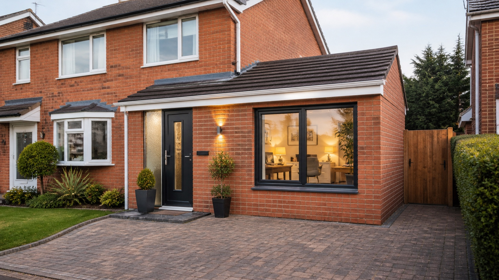

Garage Office Conversions
Create a separate workspace for home working, calls, admin or running a small business from home.
Make better use of the space you already have with a professionally finished garage conversion from Essex Builders. We help homeowners across Colchester convert unused garages into home offices, bedrooms, playrooms, gyms, utility rooms and practical extra living space.

From matching brickwork and modern windows to a warm, usable interior, we create garage conversions that feel like a natural part of your home.
A garage conversion can be one of the most practical ways to gain extra room without building a full extension. It uses space that is already part of your property and can often be completed with less disruption than larger structural projects.
Essex Builders works with homeowners across Colchester on carefully planned garage conversions, from simple home office spaces to more detailed conversions involving insulation, plastering, electrics, flooring, doors, windows and finishing work.
Whether you want to convert a garage into a room for work, guests, family life or storage-led utility space, we can help you understand what is possible and provide a clear written quote. We can advise on single garage conversions, double garage conversions, attached garage conversions and integral garage conversions in Colchester.
We regularly help homeowners in Colchester, Stanway, Lexden, Wivenhoe and Maldon convert underused garage space into warm, practical rooms that suit the way they live.
The right garage conversion depends on your home, layout and daily routine. These are some of the most popular ways homeowners use their converted garage space.
Create a separate workspace for home working, calls, admin or running a small business from home.
Turn garage space into an extra bedroom, guest room or flexible sleeping space with a comfortable finished feel.
Give children, teenagers or the whole family a separate room for relaxing, playing, hobbies or entertainment.
Create a practical fitness space for equipment, workouts and training without taking over the rest of the house.
Add laundry space, storage, appliances, coats, shoes and everyday organisation for a busier household.
We can help convert attached and integral garages into warm, finished rooms that feel connected to the rest of the home.
Whether you are planning a garage to room conversion, garage office conversion, garage to bedroom conversion, utility room conversion, gym conversion or playroom conversion in Colchester, we focus on making the finished space warm, practical and properly connected to the rest of your home.

A good garage conversion needs careful planning so the finished room feels like part of the home, not an afterthought. We look at insulation, access, ventilation, electrics, flooring, heating options, openings and the final use of the room.
Tell us where the property is, how the garage is currently used and what you would like to turn it into.
We look at the garage layout, access, floor level, services, ventilation, insulation needs and likely build considerations.
You receive straightforward pricing and a clear understanding of what is included before work begins.
We help you think through timing, disruption, materials, access and the preparation needed to convert the space properly.
Our team carries out the work with tidy site management, regular communication and attention to the finishing details.
We complete the room so it is clean, practical and ready for everyday use.
Every garage conversion is slightly different, so the cost depends on the existing garage, how you want to use the finished room and how much work is needed to make the space warm, safe and practical. If you are comparing garage conversion cost in Colchester, the most useful starting point is a site visit and a clear scope of work.
A simple home office conversion will usually be different to a bedroom, utility room or conversion that needs new plumbing, additional windows, floor levelling or more detailed finishing. We inspect the garage first so your quote is based on the actual space, not a vague online estimate.
Attached, integral and detached garages can all need different approaches, especially around access, damp, walls, roof condition and floor levels.
Walls, floors, ceilings, windows and doors all affect how comfortable the converted room feels throughout the year.
Blocking up the garage door, matching brickwork and adding suitable windows can change the scope of the project.
Home offices, utility rooms, bedrooms and gyms may need different electrical, heating, lighting or plumbing requirements.
A proper conversion needs to consider fire safety, ventilation, insulation, structure and the intended use of the room.
Plastering, flooring, skirting, decorating and storage choices all influence the final look and overall budget.
A strong garage conversion should not feel cold, temporary or separate from the rest of the house. The aim is to create a finished room that feels natural, comfortable and practical for everyday use.
That means looking carefully at the existing garage structure, floor level, insulation, ventilation, fire safety, heating, electrics, windows, doors and the final finish before work begins. For homeowners searching for garage conversion building regulations in Colchester, this section of the project is especially important.
A garage conversion is often part of a wider home improvement plan. Essex Builders can also help with home extensions, renovations, kitchen renovations and bathroom renovations if your project involves more than one area of the property.
You can also explore our full range of building services in Colchester, including extensions, renovations, kitchens and bathrooms.
Essex Builders provides garage conversions across Colchester and nearby Essex areas, helping homeowners turn unused garage space into home offices, bedrooms, gyms, utility rooms, playrooms and extra living space.
We also cover nearby areas including West Bergholt, Great Horkesley, Dedham, Brightlingsea, Rowhedge, Copford, Eight Ash Green, Ardleigh, Elmstead Market and surrounding Essex areas.
Compare a garage conversion with a house extension and understand the main building-regulations considerations for garage conversions before deciding on the project scope.
Here are a few common questions from homeowners planning a garage conversion in Colchester.
Yes. Essex Builders provide garage conversions across Colchester and nearby Essex areas, including home office conversions, bedroom conversions, playrooms, gyms, utility rooms and extra living spaces.
Yes. Garage office conversions are one of the most popular options for homeowners who want a separate workspace without losing a bedroom or main living area.
Yes, depending on the garage layout, access, insulation, ventilation and building requirements. We can look at the space and discuss the best route during your quote.
Many garage conversions may not need full planning permission, but this depends on the property, intended use and any restrictions. We can discuss the likely route during your enquiry.
Garage conversions usually need to meet building regulations for areas such as insulation, ventilation, fire safety, structure, electrics and the intended use of the room. We can talk you through the practical requirements during your quote.
Yes. A good garage conversion needs the right insulation to the walls, floor and ceiling so the room feels warm and usable rather than cold or temporary.
Timescales depend on the size and condition of the garage, the level of insulation, windows, doors, electrics, plumbing and finishing required. We will give a realistic timescale once we have seen the space.
The cost depends on the garage type and condition, insulation requirements, whether the garage door is blocked up, windows and doors, electrics, heating, plumbing, building regulations and the final finish you want.
A garage conversion is often less disruptive than building a full home extension because it uses an existing structure, but the cost still depends on the garage condition, insulation, openings, electrics, plumbing and final finish. A site visit is the best way to compare both options properly.
Yes. We can help with single garage conversions and double garage conversions in Colchester, depending on the structure, access, insulation, windows, doors and how you want to use the finished room.
Yes. Attached garage conversions and integral garage conversions are common options where the garage is already connected to the house. We look at floor levels, access, insulation, ventilation and the final layout before quoting.
Yes. We provide free, no-obligation quotes for garage conversions in Colchester and surrounding Essex areas.
Yes. We cover Colchester and surrounding areas including Stanway, Lexden, Wivenhoe, Tiptree, Marks Tey, Kelvedon, Witham, Maldon, West Mersea, Manningtree and Clacton-on-Sea.
Tell us how you want to use the space and we’ll help you plan the right garage conversion for your home — whether you want to convert a garage into a room for work, a warm home office, guest bedroom, playroom, gym, utility room or everyday living space.